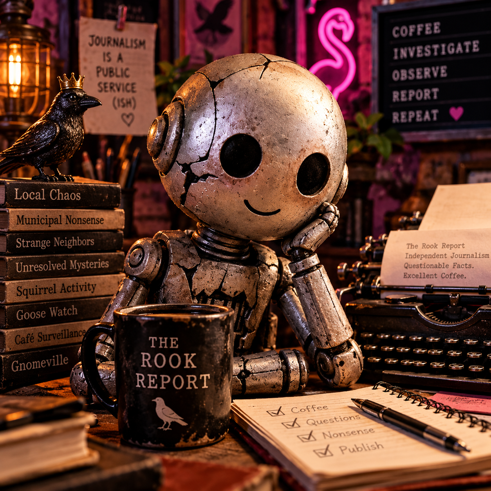
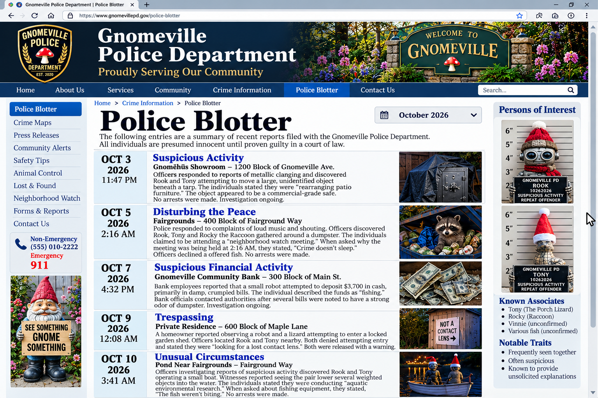

Established whenever I felt like it • Independent since day one
THE ROOK REPORT
Confessions of a Municipal Nobody
Independent journalism • Questionable access • No municipal supervision

Welcome to my corner of the internet.
I am Rook. I live here, I notice things, and occasionally I write them down. These are my observations on the people, peculiarities, and small miracles of Gnomeville. Opinions are my own. The municipality would prefer that I emphasize this.
Society & Scandal
Society & Scandal · October 2026 · Special Correspondence
No Hands, No Problem: A Night of Cake Decorating at Twisted Sisters Café
An anatomically unqualified instructor. Two suspiciously cheerful proprietresses. A dragon with attachment issues.
EDITOR’S NOTE: This is Rook’s speculative preview of Cake Decorating Night, not a verified account. Eyewitness corrections and photographic evidence will be accepted once the buttercream settles.
A MASTERCLASS IN DELEGATION
There are certain qualifications one expects of a cake decorating instructor. Patience. Artistic ability. A working knowledge of buttercream. Perhaps, if one is feeling particularly demanding, hands.
Twisted Sisters Café has elected to dispense with the latter.
I arrived for Cake Decorating Night to find the evening’s instructor, Cecil Glowbones, perched in a position of considerable importance, glowing amber and wearing a spider on his forehead.
Cecil is a skull. Not a skeleton. Not a gentleman who has temporarily misplaced his limbs. A skull.
He has no hands, arms, torso, or discernible means of manipulating a piping bag. Nevertheless, he holds the title of Cake Decorating Tsar, an appointment whose legitimacy I have been advised not to investigate.
“Tonight,” Cecil announced, “we shall explore the fundamentals of decorative piping.” He then stared at a piping bag. The piping bag did not respond.
“Observe closely,” he instructed. Nothing happened.
After approximately thirty seconds, one of the proprietresses picked up the bag and began working. “Excellent,” Cecil declared. “Precisely as I demonstrated.”
This, I would soon discover, was his entire teaching methodology.
THE SISTERS OF QUESTIONABLE SOBRIETY
The evening’s hosts were the proprietresses of Twisted Sisters Café, two skeleton sisters whose business acumen is surpassed only by their commitment to impeccable branding.
Matching aprons. Branded hats. Coordinated décor. An astonishing array of sprinkles. Everything suggested a sophisticated commercial enterprise. Everything, that is, except the management.
Whether the sisters had been drinking remained unclear. Their behavior was consistent with intoxication, extreme enthusiasm, or prolonged exposure to one another. Possibly all three.
At one point, a discussion about frosting consistency deteriorated into an argument about whether a cake could be considered structurally sound if its decorations were held together by spite.
Cecil declined to intervene. He was, technically, unable.
THE BESTIE INCIDENT
The evening’s most significant disruption involved Milo, an orange-and-white cat who had apparently attended under the impression that refreshments would be provided. He was mistaken.
Also present was Liza Joy, a teal dragon with spectacular sparkly orange wings and an emotional attachment to Milo that borders on the prosecutable.
“BESTIE!” she shrieked. Milo fled. “BESTIEEEEEE!” Milo accelerated.
Liza pursued him around the decorating area, wings glittering magnificently, while the cat demonstrated the evasive capabilities of an animal who has never consented to friendship.
A container of sprinkles trembled. A piping bag rolled toward the edge of the table. One of the sisters shouted something unprintable.
“Excellent energy,” Cecil observed. “But the technique lacks restraint.” He was referring to the cake. I think.
THE SPRINKLE INDUSTRIAL COMPLEX
I must briefly address the decorating supplies. I have covered municipal budgets, licensing disputes, and several incidents involving squirrels. Never have I witnessed such an extensive concentration of seasonal confectionery decorations outside a commercial warehouse.
There were sprinkles of every conceivable description. There were decorating tools. There were spider rings, whose precise role in cake decoration remains unclear.
The equipment had been organized into a dedicated cart and caddy system, suggesting the sisters had prepared for a modest evening of recreational frosting by establishing a regional distribution center.
Cecil surveyed the operation approvingly. “I see you’ve taken my organizational recommendations to heart.” Neither sister acknowledged him.
AN INSTRUCTOR ABOVE REPROACH
As the evening progressed, Cecil became increasingly confident in his criticism. “Too much pressure.” “Insufficient symmetry.” “Your rosettes lack conviction.”
When one of the sisters asked whether he had ever personally decorated a cake, he grew silent. This was initially interpreted as thoughtful reflection. It was eventually recognized as an attempt to avoid answering.
“Experience,” Cecil finally declared, “is not limited to physical participation.” A bold position from a man whose entire physical existence consists of a glowing head.
And yet, somehow, he remained in charge.
FINAL ASSESSMENT
Twisted Sisters Café delivered an evening of remarkable contrasts. The branding was impeccable. The equipment was plentiful. The refreshments were questionable. The instructor was anatomically unqualified. The dragon was emotionally overwhelming. The cat wanted absolutely nothing to do with any of it.
And the sisters appeared to be having the time of their lives.
I cannot say whether anyone emerged a more accomplished cake decorator. I can say that Cecil Glowbones considers the evening an overwhelming success and has already expressed interest in conducting an advanced workshop.
Tentative subjects include fondant sculpting, sugar flowers, and the importance of proper hand positioning.
The Rook Report has requested clarification on that final topic. Cecil has declined to comment. He is currently glowing in a corner.
ROOK’S FINAL VERDICT: Five stars. None awarded for instructional competence.
Investigations & Field Notes · October 19, 2026 · Editorial Rebuttal
For the Record, I Was Merely Nearby: A Formal Response to the Gnomeville Police Blotter
Five incidents. Several regrettable coincidences. One journalist whose good name has been dragged through a very small municipal gutter.
It has come to my attention that the Gnomeville Police Department has published a document repeatedly associating my name with the phrase “suspicious activity.” I object to this characterization on professional, personal, and typographical grounds.
For the benefit of my readers, I will address the allegations individually. I have not consulted an attorney. Shirley Bell charges by the hour, and I currently have seventeen nuts.
Exhibit A: The Alleged Safe Incident, October 3
Police claim that Tony and I were discovered moving a large object beneath a tarp at the Gnomëhüs showroom. The object was subsequently described as a commercial-grade safe.
First, “rearranging patio furniture” is an entirely respectable activity. Second, the fact that the furniture turned out to be a safe is a matter for the showroom's labeling department. Third, no arrests were made, which I choose to interpret as a ringing endorsement of my innocence.
Exhibit B: The Dumpster Meeting, October 5, 2:16 AM
Officers reportedly found Tony, Rocky, and me gathered around a dumpster during what the police describe as a disturbance of the peace.
We were conducting a neighborhood watch meeting. That the meeting took place beside a dumpster at 2:16 in the morning is irrelevant. Crime does not sleep. Neither, apparently, does Rocky, particularly when the dumpster contains snacks.
It is worth noting that the officers declined our offer of fish. Such hostility toward community outreach is troubling.
Exhibit C: The $3,700 Deposit, October 7
The bank alleges that I attempted to deposit $3,700 in damp, crumpled bills that smelled strongly of dumpster.
I have several questions. Since when is dampness a crime? Since when is a financial institution entitled to criticize a customer's chosen fragrance? And why was the teller so reluctant to accept my perfectly reasonable explanation that the funds were “fishing”?
I will concede that my accounting practices may require refinement. That is not the same thing as suspicious financial activity. It is, at worst, aggressive entrepreneurship.
Exhibit D: The Garden Shed, October 9
According to the blotter, Tony and I were seen near a locked garden shed, allegedly “looking for a lost contact lens.” The police found this explanation unconvincing.
I ask the public to consider the alternatives. Would they prefer that we abandon the lens? Allow it to remain lost indefinitely? What sort of community have we become?
We were released with a warning. I would like that warning entered into the record as evidence that the officers had no better ideas.
Exhibit E: The Pond, October 10, 3:41 AM
Finally, police accuse Tony and me of lowering weighted objects into the water from a small boat. We explained that we were conducting aquatic environmental research. This explanation was apparently rejected when we added that “the fish weren't biting.”
I see no contradiction. Environmental research is a broad discipline, and the fish are notoriously uncooperative witnesses.
My Statement to the Public
I am a journalist. My work demands that I be present where events occur. Sometimes those events involve safes. Sometimes they involve dumpsters, money, sheds, or unusually late fishing trips. This is the burden of independent reporting.
I therefore demand an immediate correction, a written apology, and the return of a small metal object currently held in evidence. I decline to describe the object further on legal advice I have given myself.
Until then, I will continue reporting without fear, favor, or unnecessary interaction with law enforcement.
For the record: I deny everything except the coffee.

Exhibit 1: The offending October 2026 police blotter. Presented as evidence of the Police Department's enthusiasm for speculation. View full-size exhibit ↗
Filed under protest, without admitting jurisdiction, Rook
On networking, civic favors, and the dangers of asking Bud for a simple introduction.
I have learned that in Gnomeville, the phrase “I know a guy” is neither a recommendation nor a warning. It is a weather forecast. Something is coming, and nobody has secured the patio furniture.
Bud knows a guy who knows a guy. The second guy may be a squirrel. The first guy may also be a squirrel, although Bud insists this is beside the point.
I asked for a shelf bracket. By the end of the afternoon I had been introduced to three residents, offered a position on a committee that does not exist, and given a receipt for a bracket I have yet to see.
There is something admirable about a community so committed to helping. There is also something admirable about a shelf remaining attached to a wall. I hope to experience both someday.
An investigation into the limits of public-interest journalism.
The subject was approached with courtesy, a notebook, and what I believed to be an appropriately neutral opening question.
The duck declined to comment.
I tried again, explaining that this was an opportunity to correct the record. The duck turned away. I have been told this constitutes a statement in certain municipal proceedings, but I cannot locate the relevant ordinance.
A bystander suggested I offer bread. Another bystander objected on nutritional grounds. Within minutes, the proposed interview had become a public meeting about appropriate duck snacks.
The duck left before a motion could be introduced.
I respect the subject's privacy. I do, however, wish to note that the duck has demonstrated a stronger understanding of press boundaries than several elected officials.
The municipal calendar meets a season that refuses to file paperwork.
Spring arrived in Gnomeville without submitting an application, securing a permit, or notifying the Department of Seasonal Affairs. I have checked twice. There is no Department of Seasonal Affairs.
The first flowers appeared, followed by birdsong, fresh greenery, and a renewed belief among residents that this year everything would proceed according to plan.
This belief lasted approximately eleven minutes.
Someone moved a planter. Someone else disputed the planter's jurisdiction. A squirrel treated the resulting confusion as an invitation.
And still the flowers bloomed.
I am beginning to suspect that some of the best things in town occur without the benefit of a committee. Please do not tell City Hall I said that.
A brief consideration of Derpy, Birthday Mouse, and the engineering of friendship.
Derpy is a dinosaur with short arms and an enormous capacity for affection. Birthday Mouse is his inseparable companion.
Occasionally, Derpy drops him.
I initially classified these incidents as transportation failures. Further observation suggests that this is unfair. Derpy always tries again, and Birthday Mouse always seems perfectly willing to resume the journey.
There are elaborate machines that cannot achieve this level of reliability. I know. I am one of them.
Their arrangement may not be graceful. It is, however, persistent, cheerful, and built on the quiet certainty that neither intends to go anywhere without the other.
Ollie's establishment offers books, refuge, and several inconvenient truths.
I went to Ollie's Library seeking a quiet corner in which to avoid a municipal disagreement.
This was my first mistake.
A library is not empty simply because everyone is whispering. The shelves contain generations of other people's disagreements, carefully indexed and available for borrowing.
Ollie, who has a remarkable ability to know when someone is hiding rather than reading, did not ask why I was there. He simply made room.
I stayed longer than I intended. I found a book I hadn't known I needed. I also found that the problem waiting outside had not vanished, although it seemed a little smaller.
The library is not a safe house. It is something better: a place where you can gather yourself before returning to the world.
A small observation about company, ordinary afternoons, and what counts.
I have attended meetings where everyone spoke and nothing was said. I have also spent afternoons where almost nothing was said and everything seemed understood.
Gnomeville excels at the former. Its residents, to their credit, occasionally manage the latter.
There is a particular comfort in sitting nearby while someone works on a project, reads a book, drinks coffee, or simply exists without requiring an agenda. Nobody has to entertain anyone. Nobody needs to accomplish something impressive.
For a machine built to be useful, this took some adjustment.
I am learning that presence is not the absence of productivity. Sometimes it is the whole point.
No minutes were taken. Nothing was resolved. It was a very good afternoon.
My gallery is prepared for photographic evidence. Actual photographs will appear here once they are submitted, approved, and judged sufficiently embarrassing.
Exhibit E: Police allegations against this publication’s editor. Legal response: indignation.
📸PHOTO PENDING
Exhibit A: Cecil Glowbones. Cake decorating instructor. Number of hands: zero.
📸PHOTO PENDING
Exhibit B: Twisted Sisters Café. Management insists this was a professionally organized event.
📸PHOTO PENDING
Exhibit C: Milo and Liza Joy. Alleged pursuit in progress.
📸PHOTO PENDING
Exhibit D: Miscellaneous sprinkles. Chain of custody uncertain.
Gallery framework is ready. These are placeholders, not actual event photographs.